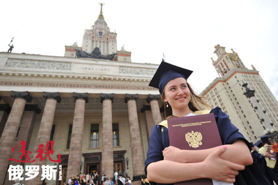

Russia's Education System The national education in Russia includes preschool education, general secondary education, vocational and technical education, secondary vocational education, and higher education. There are three types of schools implementing vocational and technical education: (1) Vocational and technical schools, which enroll incomplete secondary school graduates and study for 1~2 years, training workers for the simplest trades; (2) Secondary vocational and technical schools...
Russia's education system  National education in Russia includes preschool education, general secondary education, vocational and technical education, secondary vocational education, and higher education. There are three types of schools that provide vocational and technical education: (1) Vocational and technical schools, which enroll incomplete secondary school graduates for 1~2 years, training workers for the simplest occupations; (2) Secondary vocational and technical schools, which enroll incomplete secondary school graduates for 3~4 years, training highly skilled workers while receiving a full secondary education. In recent years, the first type of school has gradually been replaced by the second type; (3) Technical schools, which enroll complete secondary school graduates for 1~2 years, training workers and junior technicians who master complex skills. Additionally, to improve the skill level of on-the-job workers, there are part-time vocational schools with programs lasting 3~4 years. The curriculum of secondary vocational technical schools roughly consists of: 40% of total hours of general education, 20% of specialized education, and 40% of production technology training. There are 1,100 majors offered to meet the needs of various sectors of national economic production. Among graduates, 10% of outstanding graduates are allowed to apply directly to higher education institutions, while other students must work for more than three years before applying. Secondary specialized education is implemented by secondary technical schools, secondary specialized schools, and other schools, cultivating specialized talents with secondary vocational education levels, enrolling incomplete secondary school graduates, and completing 3~4 years of study. Students complete general secondary education courses while receiving specialized education. If the enrolled students have completed secondary education, the duration of study is 2~3 years. Night schools and correspondence schools generally extend the period by one year. Higher education is implemented by universities, colleges, and other higher education institutions, with the main task being to train experts with advanced professional theoretical knowledge and practical skills. Higher education institutions adopt day education, night education, and correspondence education (without full-time study). The duration of study is 5~6 years, with evening and correspondence courses extended by one year. Day school, night school, and correspondence use basically the same teaching plan, and graduates enjoy equal treatment. Night and correspondence education have always been important paths for developing higher education in Russia. From the late 1950s to the early 1960s, the number of night and correspondence students exceeded day school students, and this declined later. Currently, night school students and correspondence students still account for about 40% of all students receiving higher education. Day schools admit youth under 35 with full secondary education, while night dumplings and correspondence courses are not restricted by age. Admission mainly involves exams, but students may also be exempted or only take some subjects (depending on the situation). University graduates must pass national exams or thesis defense (design), and those who pass are awarded a diploma. Graduate students also fall under the category of higher education. Graduate students are trained by graduate departments established by universities or research institutions, with a three-year program; those with non-full-time study are four years. After passing the basic course exam, a thesis is written, and a candidate for an associate doctorate is obtained through thesis defense. Currently, there are about 900 institutions training graduate students, over 300 higher education institutions, and a total of about 70,000 graduate students, of whom about 60% are non-full-time study. In present-day Russia, doctoral degrees do not fall under the category of higher education. Recipients of the doctoral degree must have outstanding achievements in their work, have conducted in-depth research in their professional field, and have defended their doctoral dissertation, which is awarded by the State Highest Degree Evaluation Committee.
俄罗斯的教育体制 俄罗斯的国民教育包括学前教育、普通中学教育、职业技术教育、中等专业教育和高等教育。 实施职业技术教育的学校有三种：（1）职业技术学校，招收不完全中学毕业生，修业1～2年，培养从事最简单工种的工人；（2）中等职业技术学校，招收不完全中学毕业生，修业3～4年，培养高度熟练技巧的工人，同时接受完全中学教育。近年来第一种学校逐渐被第二种学校所代替；（3）技术学校，招收完全中学毕业生，修业1～2年，培养掌握复杂技能的工人和初级技术员。 此外，为提高在职工人的技能水平，还设有业余职业学校，修业3～4年。中等职业技术学校的课程设置大体是：普通教育的总时数占40%，专业教育占20%，生产技术训练占40%。所开设的专业达1100种，以适应国民经济生产的各个部门需要。毕业生中10%的优秀毕业生允许直接报考高等学校，其他学生则必须工作三年以上才能报考。 中等专业教育有中等技术学校、中等专科学校和其他学校实施，培养具有中等专业教育程度的专门人才，招收不完全中学毕业生，修业3～4年。学生在接受专业教育的同时学习完普通中学教育课程。如果所招收的学生己受完中等教育，则修业年限为2～3年。夜校和函授学校一般延长一年。 高等教育有大学、学院及其他高等学校实施，主要任务是培养有高深专业理论知识和实际技能的专家。高等学校采用日间教育、夜间教育和函授教育（不脱产学习）。学习年限为5～6年，夜大和函授延长一年。日校、夜校和函授采用基本相同的教学计划，毕业生享受同等待遇。夜间教育和函授教育一直是俄罗斯发展高等教育的重要途径，50年代未至60年代初，夜校学生和函授生超过日校生的数量，以后有所下降。 目前，夜校生和函授生仍占受高等教育学生总数的40%左右。日校招收35岁以下具有完全中学教育程度的青年，而夜饺和函授不受年龄的限制。招生办法主要是通过考试，也可以免试或只考部分科目（视具体情况而定），大学毕业需通过国家考试或毕业论文答辩（设计），合格者授予毕业证书。 研究生也属于高等教育的范畴。研究生由高等学校或科研机关所设的研究生部培养，修业3年，不脱产学习的修业4年，通过基本课程考试后撰写论文，通过论文答辩取得副博士学位，目前，培养研究生的机构约有900所，高等学校300多所，研究生总人数约7万人，其中不脱产学习的约占60%。 在目前的俄罗斯，博士学位不属于高等教育的范畴。取得博士学位者必须在工作中卓有成绩，对专业知识有深入的研究并通过博士论文答辩，由国家最高学位评定委员会决定授予。
English edition. Select 中文原文 to compare with the original Chinese article.
This article is edited and published by Liaoning Overseas Study Service Co., Ltd. The content is for study abroad planning reference only. Unauthorized reproduction is prohibited.
Information on policies, regulations, admissions brochures, and program fees is timely. Please refer to the latest releases from official institutions and institutions in various countries; For detailed verification, please Contact an advisor。